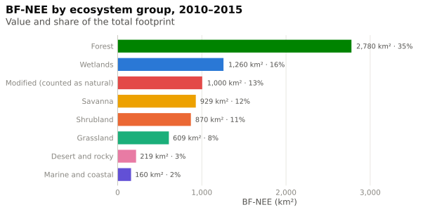
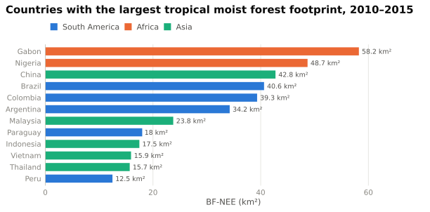
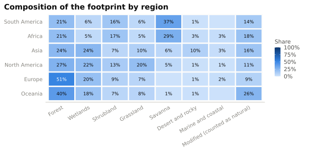
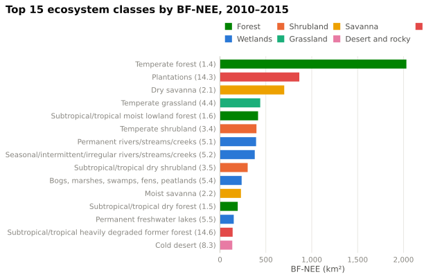

Ecosystems
Which natural ecosystems are lost to agricultural expansion linked to German final demand
The agriculture-constrained loss is split onto the ecosystem classes in proportion to their original loss (method), so the footprints of all groups add up to the total BF-NEE.
Footprint by ecosystem group
Change over time
How much of each group’s loss is linked to agriculture?
Share of the gross loss of an ecosystem group that coincides with cropland expansion in the same cell and period.
Tropical moist forests
Subtropical/tropical moist lowland (1.6) and moist montane forest (1.9).

Ecosystem groups by world region
Share of each region’s footprint that falls on each ecosystem group (2010–2015).

Top ecosystem classes
